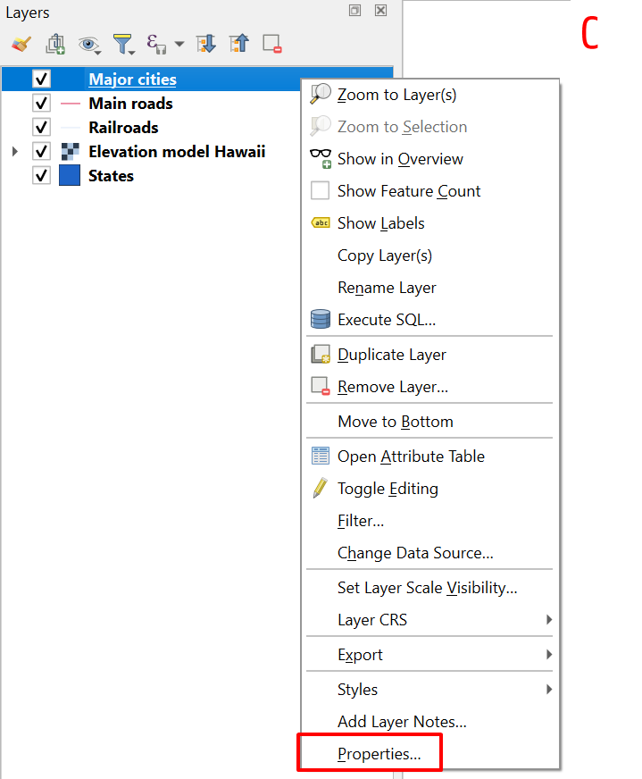

4.1 The Layer Properties window
Every layer in QGIS has its own properties: its name, its source file, its coordinate system, and also the way it is shown on the map (its symbology). This chapter is about these properties. This first page gives a short introduction: where you find these properties, and how you can look up some basic information about a layer. The pages after that deal first with vector layers (attribute table and symbology), then with raster layers (cell values and symbology).
Layer properties and actions
In The QGIS interface you saw that the Layers panel is one of the key parts of the QGIS interface: it gives you an overview of the layers you have loaded into your project. For each of these layers, you can carry out actions, look up information and configure settings.
If you right-click a layer, a menu opens with options and tools for that layer.

The menu includes general options, such as renaming, removing, copying and duplicating the layer, or Zoom to Layer(s): the map canvas then centres and zooms so that all objects of the layer just fit in it. ( As you saw on ‘Navigating the map canvas’, this is the same function as button A7.) Vector and raster layers also have a few options of their own.
The most important configuration window for a layer, the Layer Properties, can be opened with the option at the very bottom of the menu: Properties….
Shortcut: double-click a layer in the Layers panel to open its Layer Properties.
The Information and Source tabs
The Layer Properties window has partly different tabs for vector and raster layers. The first two tabs, Information and Source, are the same for both.
Information tab

In the first tab of the Layer Properties, Information, you will find the metadata available for the layer: for example the file size, when the file was last modified, technical metadata such as the data type, information about licences and rights (if available)…
For vector layers this tab also gives an overview of the attribute fields and their type (for example text or number). For raster layers it shows, for example, the number of columns and rows of cells (Width and Height) and the spatial resolution of the raster (A: shown as Pixel Size, the width and height of one cell, in the units of the coordinate system, for example metres).

Source tab

In the second tab, Source, you can, among other things, change the name of the layer. You can also indicate which coordinate system and (for vector layers) which text encoding (for example the widely used UTF-8) should be used.
Many of the other tabs are different for vector and raster layers. The next pages therefore discuss them separately: first for vector layers, then for raster layers.